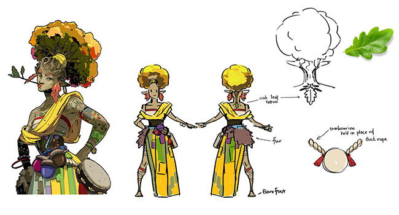
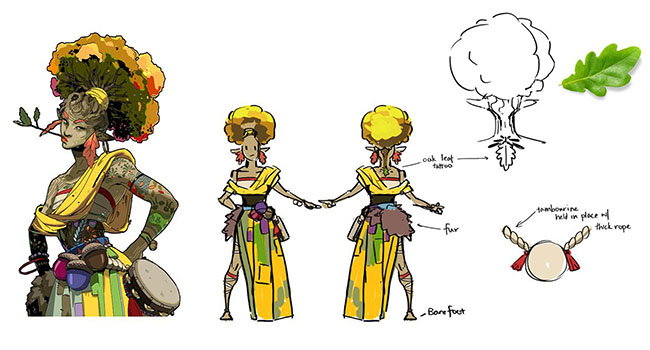
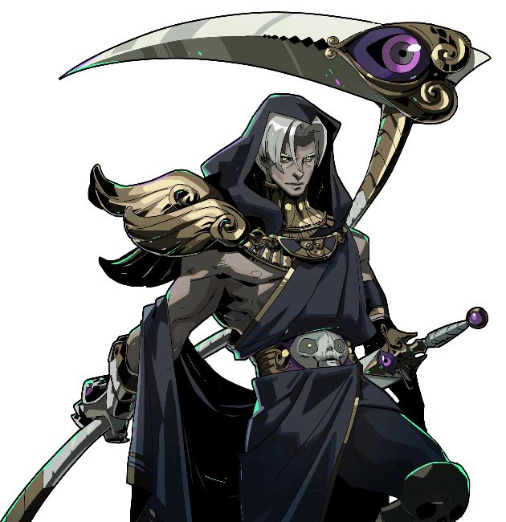
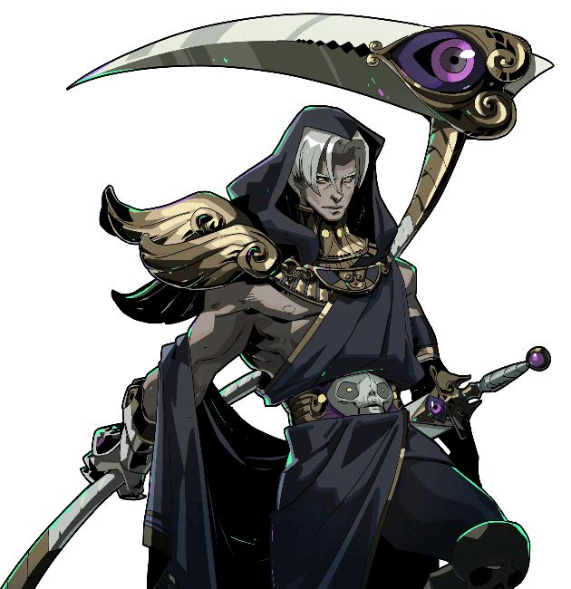
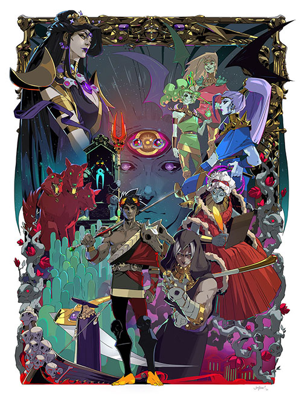
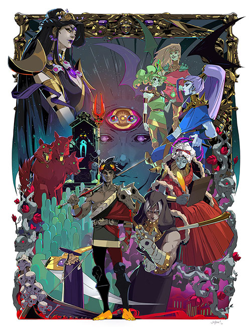

I chose this game due to my very small history of playing video games and my love for the ancient histories. I don't play many games but this is the one that I'm currently trying out. I like it so far because of the quality of the characters, the worldbuilding and story progression, and its ability to be replayed over and over without being monotonous. Zagreus, the protagonist and player character, struggles to leave both his Palace and the Underworld in order to find the truth to some pressing questions he has. Along the way, he meets his relatives, the Greek Pantheon or Olympians, creatures and souls of the underworld, and some unlikely friends. While there is no true ending mechanically, the story does end after Zagreus manages to get 'top-side' and have all his questions answered. Its rogue-like play style allows for endless runs even after the story lines have been completed. Each run is unique because of the different boons and upgrades randomly spawning along with weapon and keepsake combinations. This also ties back to the "triumph over obstacles" idea stated in Lindley's paper (note 1).
While the trailer is mainly in 2D animation, the actual game has a mix of both 2D and 3D. It is a top-down dungeon crawler type utilizing 2D sprites and nagivation, 3D splash artworks and effects, and surround sownd to fully emerse the player into the Underworld.
 

 

 

All of the artwork is hand drawn, utilizing vibrant colors and cell-shading. Each family has their own colors too which I found to be a nice touch. Hades and Zagreus both wear red while Nyx and Thanatos wear cool purples and blacks. Hypnos dones both family colors: the cool tones of his family but the reds of his employers (as seen in the poster). The other character's concept art shown here belongs to the NPC Eurydice. Zagreus meets her in Asphodel, and she offers a variety of items to him with each visit. As a nymph, her colors reflect nature. The cell-shading is actually my favorite part. It brings so much life and character depth to each individual.
This first track is notably named No Escape, a very pointed remark Hades often makes upon Zagreus' return to the Palace. It sets the mood and tone for the game right from the start. It is correct; There is no hope of escaping when each death brings him back to the beginning. This music is normally played in the main menu. Pointing to Lindley's paper again, Zagreus gets better with each run (whether by player experience, God/Hell Mode, Daedalus Hammer upgrades, Darkness) leading the player to enjoy the struggle and little victories (note 1).